Co-op Commander Guide: Stetmann
Hero Genius (Henius)
Sections on this Page
Commander Summary
Stetmann uses his army of mecha zerg units powered by Egonergy while providing additional buffs through Stetzones to defeat enemy forces.

Level Unlocks
| Level/Icon | Name | Description |
|---|---|---|
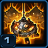 |
Stetisfaction Guaranteed | Stetmann can deploy Stetellites, which grant passive Stetzone enhancements. Structures that unlock units are limited to 1. Mecha Larvae spawn at an increased rate. Stetmann's Mecha units utilize Egonergy, which does not regenerate on its own. |
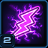 |
The J.U.I.C.E. is Loose | Unlocks the J.U.I.C.E. Configuration, which regenerates Egonergy for Stetmann's units and energy for allied units. |
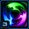 |
Gary: Stetellite Overcharge | Gary gains the ability to overcharge a Stetellite, allowing it to actively grant bonuses to nearby units depending on the current Stetellite configuration. |
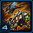 |
Mecha Zergling & Mecha Baneling Upgrade Cache |
Unlocks the following upgrades at the Mecha Spawning Pool and the Mecha Baneling Nest:
|
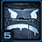 |
Mechnum Opus | Gary gains the ability to transform into Super Gary. Super Gary can hold twice the number of ability charges. He can also temporarily generate his own Stetzone and gains attack speed and health regeneration when he collects Mecha Remnants. |
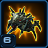 |
New Unit: Mecha Lurker |
Area damage ambusher. Must burrow to attack. Can use Tunnel of TERROR Algorithm and Focused Strike Algorithm. Morphed from Mecha Hydralisks. Can attack ground units. |
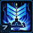 |
Stetmannopoly | Upgrading to Mecha Lair and Mecha Hive reduces the cooldown and increases the maximum charges of Deploy Stetellite. |
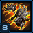 |
Mecha Hydralisk & Mecha Lurker Upgrade Cache |
Unlocks the following upgrades at the Mecha Hydralisk Den and the Mecha Lurker Den:
|
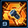 |
Friends Forever | Allows Gary and Stetellites to pick up the Remnants of destroyed Mecha units. When enough Remnants are picked up, Mecha units will be rebuilt at no cost at their respective unlock structures. |
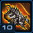 |
Mecha Infestor Upgrade Cache |
Unlocks the following upgrades at the Mecha Infestation Pit:
|
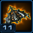 |
New Unit: Mecha Battlecarrier Lord |
Flying heavy-assault unit. Shoots Mecha Broodlings at its target. Builds and launches Mecha Locusceptors that attack enemy ground targets. Can use Stetmato Cannon. Can attack ground units. |
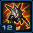 |
Mecha Ultralisk Upgrade Cache |
Unlocks the following upgrades at the Mecha Ultralisk Cavern:
|
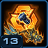 |
Lovable Little Rascals | Mecha Zerglings and Mecha Banelings drop double the amount of Mecha Zergling Remnant. |
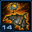 |
Mecha Spire Upgrade Cache |
Unlocks the following upgrades at the Mecha Spire and the Mecha Greater Spire:
|
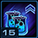 |
Pushing the Egonvolope | Allows Stetmann's structures to research two upgrades simultaneously. |
Highlighted rows denote large power spikes for the commander.
Achievements
The commander-specific achievements for Stetmann are:
| Achievement | Name | Description |
|---|---|---|
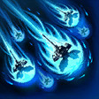 |
Beep Beep Little Stetellite | Deploy 30 Stetellites by 10 minutes on Hard difficulty. |
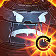 |
Not A Filler Episode | Complete the Super Gary Transformation Sequence within 5 minutes. |
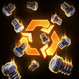 |
Recycle, Reduce, Reuse | Collect 500 Mecha Remnants in a single mission. |
| X.O.X.O. | Use Gary's Stetellite Overcharge to overload 2,500 allied units. |
Stetzones
Stetzones provide bonuses for any of Stetmann or his ally's units that stand in them. Each Stetellite will spread a Stetzone within 8 range from itself. A Stetellite can only be deployed within a Stetzone. The Deploy Stetellite Ability is shown below:
| Ability | Name | Description | Recommended Usage | Numbers |
|---|---|---|---|---|
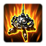 |
Deploy Stetellite | Deploys a Stetellite at the target location. Stetellites must be placed within a Stetzone. |
|
|
Stetzones can be operated in three different configurations. Configurations can be switched every 1 second, so changing configurations frequently is a key element of Stetmann's gameplay. These modes are listed below:
| Ability | Name | Description | Recommended Usage | Numbers |
|---|---|---|---|---|
| Fun Accelerator for Speedy Transportation Configuration (FAST) | Stetzones grant Stetmann's units 100% increased movement speed. Allied units gain 50% increased movement speed. |
|
|
|
| Health Uptick Generating System Configuration (HUGS) | Stetzones grant Stetmann's units 10 life regeneration per second. Allied units gain 5 life regeneration per second. |
|
|
|
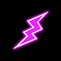 |
Just-in-time Uninterruptable Input for Charging Egonergy Configuration (JUICE) | Stetzones grant Stetmann's units 5 Egonergy regeneration per second. Allied units gain 2.5 energy regeneration per second. |
|
|
Sub-Ascension Leveling
Difficulty: Moderate
Once Stetmann unlocks Super Gary, it is best to rely on that Hero unit to clear enemy encampments and bases before sending your army in to clear the objectives. Before Super Gary, it is best to use a Hydralisk/Zergling composition as the main backbone of your army, using the Zerglings to tank for the more fragile Hydralisks.
Masteries
Below are the three Power Sets for Stetmann with the recommended point allocations for each. Note that these are meant to serve a general, all-purpose build that is effective across all maps with no Prestiges selected. You are highly encourged to change these masteries to suit your playstyle and particular challenges you face (e.g. Weekly Mutations).
Power Set 1:
| Power | Value | Recommended Points to Add | Further Considerations |
|---|---|---|---|
| Upgrade Resource Cost | -2% per point -60% maximum |
0 | The upgrade resource mastery only affects attack and armor upgrades, and not upgrades that improve individual units. Players will need to take into consideration whether this mastery is needed. |
| Gary Ability Cooldown | -1% per point -30% maximum |
30 |
Super Gary can be an extremely powerful unit when used correctly, providing Stetmann's army with instant mobility, buffs and a strong AoE attack to deal with attack waves. Having access to these abilities more often is a better choice.
Power Set 2:
| Power | Value | Recommended Points to Add | Further Considerations |
|---|---|---|---|
| Stetzone Bonuses | 2% per point 60% maximum |
30 | Players will need to look at how they are using the energy on their units in order to determine the appropriate split. Players that prefer to spam abilities in short, infrequent bursts (like Infestor play) may decide to put more points into the Energy pool. |
| Maximum Egonergy Pool | 2% per point 60% maximum |
0 |
The points recommended here are a starting point for players. A player's playstyle will determine what split they prefer to use. A 8/22 split is optimized for Roach-style play. A 30/0 split can be used to keep all options viable.
Power Set 3:
| Power | Value | Recommended Points to Add | Further Considerations |
|---|---|---|---|
| Deploy Stetellite Cooldown | -0.17 sec per point -5 sec maximum |
0 | A minimum of 12 points into the Structure Morph Rate mastery will allow players to get Super Gary out as soon as he spawns, which compensates for Stetmann's lack of early game power. However, players that prefer to not rely on Super Gary may find more benefit in the Deploy Stetellite mastery, which will allow them to spawn more Stetellites more frequently. |
| Structure Morph Rate | 2% per point 60% maximum |
30 |
Stetmann naturally floats many minerals which can be used to place Hatcheries around the map to spread Stetellites from, reducing the need for allocating points into the Stetellite mastery. Therefore, the Structure Morph mastery is the better choice here.
Prestiges
Below are the prestiges for Stetmann. Note that "Effective Level" is the level at which the prestige achieves it full effect.
| Level | Name | Description | Effective Level | Notes |
|---|---|---|---|---|
| 1 | Signal Savant |
|
1 | None |
| The disadvantage for this Prestige only takes effect at level 5, which means below Stetmann level 5, this prestige provides purely a positive benefit to the player. However, the loss of Super Gary can be a huge disadvantage, as Super Gary is responsible for Stetmann's overall strength as a commander. This prestige works well against mutators like Propagators, as Stetellites can no longer be converted by Propagators. Additionally, this prestige also favours mass Infestor-style play, as that style of play does not rely much on Super Gary as a hero unit. | ||||
| Level | Name | Description | Effective Level | Notes |
|---|---|---|---|---|
| 2 | Best Buddy |
|
5 |
|
| This prestige doubles up on the Hero unit and provides it with a large set of buffs that makes the unit even more powerful. When played well, Super Gary can be used to severely weaken enemy bases and wipe attack waves. The disadvantage may appear to be a big one, and for a unit like Gary, it is true. However, Super Gary has access to the Gary Zone ability which allows him to not only move outside Stetzones at regular speed, but also place Stetellites. When used efficiently, the player should have all the mobility around the map they require, without being hindered by this prestige's disadvantage. | ||||
| Level | Name | Description | Effective Level | Notes |
|---|---|---|---|---|
| 3 | Oil Baron |
|
1 |
|
| While this prestige might appear to be useful, The Best Oil is only useful when provided in several stacks, such as those given to Super Gary. Since these stacks are only given out on a kill, it is highly unlikely that a unit can accumulate enough stacks such that they would get a signficant advantage from this prestige. Combined with the fact that these stacks are temporary and wear off after 30 seconds, this prestige is not very useful for most units. However, units that deal splash damage, or have cleave attacks (such as Lurkers and Ultralisks) can benefit from this prestige, especially on missions like Dead of Night, where there is a constant stream of enemy units to keep the stacks refreshed. | ||||
Best Buddy is the prestige that outshines the rest here, by providing a huge power level increase to Super Gary, with very minimal downsides. Pre-level 5, Stetmann should be using Signal Savant, as it offers no downsides. However, past level 5, Best Buddy should be used if it is unlocked, with a big focus on the hero unit, to reap the power of the prestige.
Hero Unit
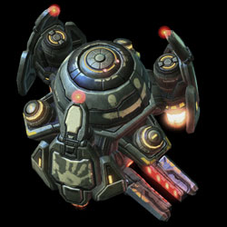
Spawn time: 4:00
Respawn time: 1:00
The abilities for Gary are:
| Ability | Name | Description | Cooldown |
|---|---|---|---|
| E-Gorb | Unleashes a traveling electrical orb that deals 50 damage per second to all enemies along its path. If Gary is in a Stetzone, he unleashes three orbs instead. | 30 seconds | |
| Stetellite Overcharge | Overchages a target Stetellite, allowing it to actively grant bonuses to nearby units depending on the current Stetzone configuration. Overcharge effect lasts for 30 seconds. - F.A.S.T. Overload grants 20% increased attack speed for 45 seconds. - H.U.G.S. Overload grants a shield that absorbs 60 damage for 45 seconds. - J.U.I.C.E. Overload regenerates 60 Egonergy and energy over 45 seconds. |
45 seconds | |
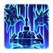 |
Semi-Stable Mass Transportation | Teleports Gary and all nearby units you control to a target Stetellite's location. (Does not affect ally units) | 180 seconds |
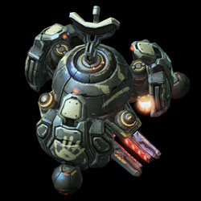
For a cost of 450 Minerals/300 Gas, Gary may be upgraded to Super Gary, with an extra ability charge (except for Gary-Zone) and a new ability. The abilities for Super Gary are:
| Ability | Name | Description | Cooldown |
|---|---|---|---|
| E-Gorb | Unleashes a traveling electrical orb that deals 50 damage per second to all enemies along its path. If Gary is in a Stetzone, he unleashes three orbs instead. | 30 seconds | |
| Stetellite Overcharge | Overchages a target Stetellite, allowing it to actively grant bonuses to nearby units depending on the current Stetzone configuration. Overcharge effect lasts for 30 seconds. - F.A.S.T. Overload grants 20% increased attack speed for 45 seconds. - H.U.G.S. Overload grants a shield that absorbs 60 damage for 45 seconds. - J.U.I.C.E. Overload regenerates 60 Egonergy and energy over 45 seconds. |
45 seconds | |
| Semi-Stable Mass Transportation | Teleports Gary and all nearby units you control to a target Stetellite's location. (Does not affect ally units) | 180 seconds | |
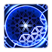 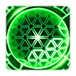 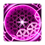 |
Gary Zone | Generates a Stetzone around Super Gary for 30 seconds. | 120 seconds |
Recommended Army Composition
The recommended army composition for Stetmann is below. Note that this assumes no Prestige talent selected and recommended Mastery Allocations. This is a basic recommendation for your army framework. It is recommended to gain an understanding for each of the units in the Units section and further add tech units so that you are able to better handle the situations you face.
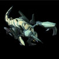
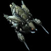
Using Zerglings to tank for Hydralisks, Stetmann should be able to handle almost any enemy composition without any issues. Attack wave should first be engaged with Super Gary before attacking with your army.
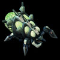
If dealing with a pure ground composition, Mecha Banelings are a great way of handling attack waves. Place them near spawn points if possible.
Combat Units
For more information on Stetmann's unit stats, comparison between units and upgrade calculations, visit the Data Tables page.
Stetmann's combat units are listed below:
Mecha Zergling
- Max Egonergy: 50
- Can be an extremely effective tank with the Hardened Egonergy Shield.
- Hardened Egonergy Shield stacks with HUGS overcharge.
- Almost invincible with the the Hardened Egonergy Shield Upgrade and alternating HUGS and JUICE Stetzones.
- Use JUICE after clearing out most enemy units in bases to minimize the energy drain of the Synthetic Adrenal Pumps upgrade.
- Great unit as a mineral dump.
Upgrades:
| Upgrade | Name | Effect |  / / |
Research Time |
|---|---|---|---|---|
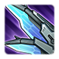 |
Metal-Bolic Boost | Increases the movement speed of Mecha Zerglings by 60%. | 100/100 | 60 seconds |
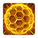 |
Hardened Egonergy Shield | Allows Mecha Zerglings to reduce incoming damage to a maximum of 10. Drains 5 Egonergy per use. | 100/100 | 60 seconds |
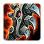 |
Synthetic Adrenal Pumps | Increases attack speed of Mecha Zerglings by 100%. Drains 1 Egonergy per attack. | 100/100 | 60 seconds |
Mecha Baneling
- Max Egonergy: 50
- Expensive unit, given its utility.
- Does great amounts of splash damage.
- Can be useful for clearing up clumps of enemy units.
Skills:
| Skill | Name | Description | Cooldown | Energy Cost |
|---|---|---|---|---|
 |
Anti-Centripetal Rocket Servos | Increases the movement speed of this unit by 15% and allows it to leap onto enemy units. | 5 seconds | 1 |
Upgrades:
| Upgrade | Name | Effect | / |
Research Time |
|---|---|---|---|---|
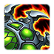 |
Anti-Centripetal Rocket Servos | Increases the movement speed of Mecha Banelings by 15% and allows them to leap onto enemy units. | 100/100 | 60 seconds |
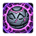 |
Egonergy Enhanced Explosives | Allows the Mecha Baneling to add its current Egonergy to its damage when it explodes. | 100/100 | 90 seconds |
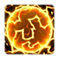 |
Egonergy Efficient Barrier | Increases the damage absorbed by the Mecha Baneling's Egonergy Impact Barrier to 2 damage per point of Egonergy. | 100/100 | 90 seconds |
Mecha Hydralisk
- Max Egonergy: 100
- Does great amounts of Anti-Air damage.
- Erudition Missile Launchers upgrade can increase Hydralisk damage greatly vs. Air Armored units.
- Very effective against armored objectives that can be hit by air attacks.
- Can overkill due to its attacks being projectiles, so attention needs to be paid to how they are taking engagements.
- Versatile but fragile unit.
Upgrades:
| Upgrade | Name | Effect | / |
Research Time |
|---|---|---|---|---|
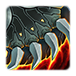 |
Hydra-lic Augments | Increases the movement speed of Mecha Hydralisks by 50%. | 100/100 | 60 seconds |
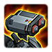 |
Erudition Missile Launchers | Allows the Mecha Hydralisk to replace its anti-air Needle Spine weapon with a more powerful Erudition Missile armament. | 100/100 | 90 seconds |
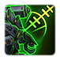 |
Tyr-Class Targeting System | Increases the Mecha Hydralisk's anti-air weapon range by 3. | 100/100 | 90 seconds |
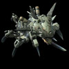
Mecha Lurker
- Max Egonergy: 200
- Good defensive unit which can be used to clear attack waves.
- Due to its high-damage skill being manual cast, this unit requires a little bit of micromanagement.
- Tunnel of Terror Algorithm gives Lurkers invulnerability while in motion and does not require the Lurker to be burrowed.
- Focused Strike Algorithm can stack, making it a useful ability to burst down targets.
Skills:
| Skill | Name | Description | Cooldown | Energy Cost |
|---|---|---|---|---|
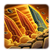 |
Tunnel of TERROR Algorithm | Tunnels to a nearby target location, dealing 60 damage to enemies along the way. | 8 seconds | 75 |
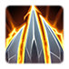 |
Focused Strike Algorithm | The Mecha Lurker concentrates its fire on a target unit, dealing 50 damage to a small area around that unit for 10 seconds or until the unit is destroyed. | 0 seconds | 75 |
Upgrades:
| Upgrade | Name | Effect | / |
Research Time |
|---|---|---|---|---|
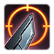 |
Extended Tunnel of TERROR Algorithm | Increases the maximum range of the Mecha Lurker's Tunnel of TERROR Algorithm by 6. | 100/100 | 90 seconds |
 |
Focused Strike Algorithm | Allows the Mecha Lurker to concentrate its fire on a target unit, dealing 50 damage to a small area around that unit for 10 seconds or until the unit is destroyed. | 100/100 | 90 seconds |
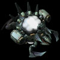
Mecha Corruptor
- Max Egonergy: 200
- Great anti-air unit.
- Cluster Busters ability can be used to destroy clumps of enemy units while spawn-camping attack waves.
- Cluster Busters works very well with Rapidfire.
Skills:
| Skill | Name | Description | Cooldown | Energy Cost |
|---|---|---|---|---|
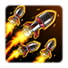 |
Cluster Busters | Fires a barrage of missiles dealing 50 (+30 vs. light) damage to enemy air units in a target area. | 10 seconds | 100 |
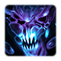 |
Terraclean Solvent | Emits a solvent stream that deals 10 damage per second for 3 seconds, then increases to 50 damage per second. Channeled ability. Can target enemy ground units and structures. |
20 seconds | 75 |
Upgrades:
| Upgrade | Name | Effect | / |
Research Time |
|---|---|---|---|---|
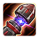 |
Wide Area Cluster Busters | Increases the search radius of Mecha Corruptor's Cluster Busters by 100%. | 100/100 | 60 seconds |
 |
Terraclean Solvent | Allows the Mecha Corruptor to emit a solvent stream that deals devastating damage to enemy ground units over time. | 100/100 | 90 seconds |
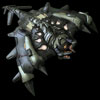
Mecha Battlecarrier Lord
- Max Egonergy: 400
- Extremely expensive unit.
- Relatively ineffective due to its high dependence on Egonergy in order to attack.
Skills:
| Skill | Name | Description | Cooldown | Energy Cost |
|---|---|---|---|---|
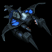 |
Ready Mecha Broodling | Builds Mecha Broodlings that can attack ground units. | 3 seconds | 5 |
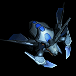 |
Build Mecha Locusceptor | Builds Mecha Locusceptors that automatically attack the Mecha Battlecarrier Lord's target. Can attack ground units. |
20 seconds | 50 |
 |
Stetmato Cannon | Blasts a target with a devastating plasma cannon causing 300 damage and delusions of grandeur. | 0 seconds | 100 |
Upgrades:
| Upgrade | Name | Effect | / |
Research Time |
|---|---|---|---|---|
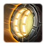 |
Mecha Locusceptor Bays | Allows the Mecha Battlecarrier Lord to build and launch 6 Mecha Locusceptors that automatically attack enemy ground units. | 150/150 | 90 seconds |
| Stetmato Cannon | Allows the Mecha Battlecarrier Lord to blast targets with a devastating plasma cannon causing 300 damage and delusions of grandeur. | 100/100 | 90 seconds |
Mecha Infestor
- Max Egonergy: 400
- Extremely powerful unit when massed.
- Can create large waves of spawned units and overwhelm enemies.
- Bonus Ravager upgrade is a critical upgrade which greatly increases damage output.
- Extremely fragile and will need to be kept at the backline.
- UMI-C Charging Protocol can be used consistently to keep Infestors at full energy.
Skills:
| Skill | Name | Description | Cooldown | Energy Cost |
|---|---|---|---|---|
| Roaches Away! | Spawn 2 Mecha Roaches. Spawned units last 45 seconds. | 0 seconds | 250 | |
| UMI-C Charging Protocol | The Mecha Infestor launches a mechanical nerve cord at a friendly unit, restoring 150 life, 50 Egonergy, and 50 energy instantly. An additional 600 life, 200 Egonergy, and 200 energy regenerates over 20 seconds. The unit's ability cooldown rate is increased by 25% | 5 seconds | 75 | |
| Deconstructive Roach-nites | Infests target enemy structure, dealing 500 damage over 10 seconds and disabling it for the duration of the effect. If the structure is destroyed while under the effects of Deconstructive Roach-nites, it will spawn 2 Mecha Roaches. | 0 seconds | 75 |
Upgrades:
| Upgrade | Name | Effect | / |
Research Time |
|---|---|---|---|---|
 |
UMI-C Charging Protocol | Allows the Mecha Infestor to launch a mechanical nerve cord at a friendly unit, restoring 150 life, 50 Egonergy, and 50 energy instantly. An additional 600 life, 200 Egonergy, and 200 energy regenerates over 20 seconds. The unit's ability cooldown rate is increased by 25% | 100/100 | 90 seconds |
| BONUS Ravager! | Allows the Mecha Infestor's Roaches Away! and Deconstructive Roach-nites to spawn an additional Mecha Ravager. | 100/100 | 90 seconds |
Mecha Ultralisk
- Max Egonergy: 300
- Can be made in small quantities to provide a strong frontline force.
- Mecha Mooch Module can be used to further increase ruggedness in combat.
- Vectored Burrow Charge and Electrostatic Surprise can take out a lot of high-damage mech units (even from two Ultralisks), reducing overall threat to Stetmann's army.
Skills:
| Skill | Name | Description | Cooldown | Energy Cost |
|---|---|---|---|---|
| Vectored Burrow Charge | Burrow and charge towards a unit. Upon unburrowing, all enemy units in the vicinity are knocked back and dealt 50 damage. | 5 seconds | 75 | |
 |
Mecha Mooch Module | Absorbs 25 health from a nearby enemy or friendly mechanical unit, healing for that amount. | 2 seconds | 5 |
Upgrades:
| Upgrade | Name | Effect | / |
Research Time |
|---|---|---|---|---|
| Electrostatic Surprise! | Allows the Mecha Ultralisk's Vectored Burrow Charge ability to stun enemy mechanical ground units in a large area. | 100/100 | 60 seconds | |
| Mecha Mooch Module | Grants the Mecha Ultralisk the ability to absorb 25 life from nearby enemy or friendly mechanical units, healing for that amount. | 100/100 | 90 seconds | |
| Chitanium Plating | Grants the Mecha Ultralisk 25% damage reduction. | 100/100 | 90 seconds |
Build Order
Below is a order for Stetmann that rushes Super Gary out. This one assumes max mastery points into the Structure Morph mastery to ensure adequate resources to upgrade Gary as soon as he spawns. For more information on how to read and construct your own build orders, please check the Build Order Theory page.
14 Overlord
14 Extractor (2 drones on completion)
14 Extractor (2 drones on completion)
19 Spawning Pool
18 Lair
18 2x Zerglings to Expo
20 Drone
21 Infestation Pit
20 Drone
21 Overlord
Saturate gasses at 200 minerals
21 Hive
Saturate mineral line
Note that on some maps that are more defensive (for example Mist Opportunities), it may be better to delay getting the Super Gary upgrade and focusing on a more economic-centric build by take your expansion faster. As such, the build order will need to be modified accordingly. To learn more about how to construct your own build orders, please check the Build Order Theory page.
Gameplay Guide
Mecha Remnants
Whenever any of Stetmann's Mech units are killed under a Stetzone or within 15 range of Gary/Super Gary, a certain number of Mecha Remnants for a unit will be recycled to Stetmann. When a certain number of Remnants are recycled, a Mecha unit will be rebuilt at no cost at their respective unlock structures. Additionally, when Super Gary absorbs a Mecha Remnant, he gains 10% increased attack speed and regenerates an additional 1 life per second for 30 seconds. This can stack up to 20 times. The table below summarizes which Remnants are dropped from each unit.
| Unit Killed | Remnants Dropped | Number Dropped |
|---|---|---|
| Mecha Zergling | Mecha Zergling | 1 |
| Mecha Baneling | Mecha Zergling | 2 |
| Mecha Hydralisk | Mecha Hydralisk | 1 |
| Mecha Lurker | Mecha Hydralisk | 2 |
| Mecha Infestor | Mecha Infestor | 1 |
| Mecha Corruptor | Mecha Corruptor | 1 |
| Mecha Battlecarrierlord | Mecha Corruptor | 2 |
| Mecha Ultralisk | Mecha Ultralisk | 1 |
The table below lists out the required count of Mecha Remnants to produce a full unit.
| Unit | Remnants Required |
|---|---|
| Mecha Zergling | 2 |
| Mecha Hydralisk | 4 |
| Mecha Infestor | 4 |
| Mecha Corruptor | 4 |
| Mecha Ultralisk | 4 |
Playstyle Traps
A common trap for Stetmann players is to ignore the power of Stetzones and take engagements outside them. This can severely reduce their army's effectiveness in the mission. Additionally, switching Stetzone types is part of the gameplay, and continuously using a single Stetzone type is inefficient.
Additionally, some players may choose to cover their ally's base in a speed Stetzone. This should not always be done. Players will need to consider a number of factors:
- Ally's commander: Certain commanders macro up extremely quickly and reach full saturation within a few minutes (like Zagara). These commanders generally do not benefit from a Stetzone in their expansion as much as slower commanders (like Stukov).
- Distance between bases: Some maps have player expansions very close to each other. As a result, it would take only a few Stetellites to cover an ally's base with a Stetzone.
- Attack wave timing: If players find they do not have adequate resources to handle an attack wave early (such as on Rifts to Korhal), putting a Stetzone in an ally's base and switching to HUGS may keep workers alive assuming there is nothing to draw aggro of the attack wave.
Playstyle Tips
- When engaging an enemy camp, stay outside attack range of enemy units and use an E-Gorb on the enemy units. Taking damage, enemy units will run away, in the same direction as the orb is moving. This can clear large number of enemies effectively.
- If you need a Stetzone in an area, use Super Gary's Stetzone ability, and then place a Stetellite in the Stetzone to produce a permanent Stetzone once the ability runs out.
- Following from the above point, it may be useful to spend less time spreading Stetzones to some locations from your base. Instead, use Super Gary's Stetzone ability to provide a place to put a Stetellite and spread from there.
- You can use Hatcheries to create additional Stetzones to place Stetellites and spread Stetzones from there.
- Switch to the Speed Stetzone to move valuable units away from the enemy if they get aggro'ed.
- Alternating between the Energy and the HP Stetzone can keep fully-upgraded Zerglings alive for a very long time.
- Tech structures can be assigned rally points, so make sure to set them to ensure recycled units go to where they are supposed to go.
- Make use of Stetellite overcharges because they provide large buffs to your units. Overcharge a Stetellite before taking engagements.
- Build Macro Hatcheries to allow you to spend your resources more effectively.
- Super Gary gains a temporary attack speed buff when he picks up Mecha Remnants. Make sure Super Gary is near your army in combat to take advantage of this buff.